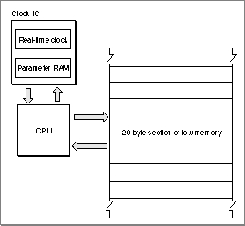
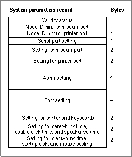

About Parameter RAM
Most user settings that need to be present at system startup are stored in parameter RAM. Parameter RAM takes up 256 bytes of battery-powered RAM: 20 bytes are documented in this chapter, and 236 bytes are reserved by the system software. The 236 bytes of parameter RAM are also known as extended parameter RAM. The parameter RAM is located in the computer's real-time clock chip, together with the date and time setting. No matter what system disk is used at system startup, parameter RAM ensures that certain settings remain the same on a given computer from one session to another.Much of the information stored in parameter RAM is used exclusively by the system software. For example, system software uses 2 bits of parameter RAM to keep track of how many times menu items should blink after being selected. Other values stored in parameter RAM are useful to applications. For example, parameter RAM stores the suggested time interval that your application should use when determining whether two mouse clicks constitute a double-click. You can access this double-click time indirectly by using the Toolbox Event Manager's
GetDblTimefunction. Whenever possible, you should use Toolbox routines to access parameter RAM values.
The 20 bytes of parameter RAM that are commonly accessible by applications are copied into low memory at system startup. Figure 7-1 illustrates the interaction between parameter RAM and low memory. Parameter RAM is read into low memory at system startup, and any modifications to this low-memory copy of parameter RAM are written back to the clock chip.
- WARNING
- The operating-system routines described in this chapter let you directly manipulate values in parameter RAM; however, because the organization of parameter RAM is subject to change, you should rarely use them. Instead, use the appropriate Toolbox routines to indirectly manipulate values in parameter RAM.

Figure 7-1 Interaction between parameter RAM and low memory

The 20 accessible bytes of parameter RAM are described by the system parameters record, which is defined by a data structure of type
SysParmType.Figure 7-2 shows the general structure of the system parameters record, which contains 11 fields.
Figure 7-2 The format of the system parameter record

A system parameters record contains 11 fields. See page 7-31 for the exact structure of each field.
The first field of the system parameters record contains information about the validity status of the clock chip. Whenever a write to the clock chip is successful, the value $A8 is stored in this field. The status is examined when the clock chip is read at system startup.
The second and third fields contain information about the node ID for the modem port and printer port.
The fourth field tells which device or devices may use each of the serial ports.
The fifth field contains the baud rate, data bits, stop bits, and parity for the modem port. Bits 0-9 define the baud rate; bits 10 and 11 define the number of data bits; bits 12 and 13 define the parity; and bits 14 and 15 define the number of stop bits.
The sixth field contains the baud rate, data bits, stop bits, and parity for the printer port. As with the modem port, bits 0-9 define the baud rate; bits 10 and 11 define the number of data bits; bits 12 and 13 define the parity; and bits 14 and 15 define the number of stop bits.
The seventh field contains the time at which the alarm clock should sound. The time is defined in terms of seconds since midnight, January 1, 1904.
The eighth field contains the default application font number minus 1.
The ninth field contains the settings for the printer and for the keyboard. Bit 0 designates whether the currently chosen printer (if any) is connected to the printer port (0) or the modem port (1). Bits 1-7 are reserved for future use. Bits 8-11 of this field contain the auto-key rate, the rate at which a character key repeats when it's held down; this value is stored in 2-tick units. Bits 12-15 contain the auto-key threshold, the length of time a key must be held down before it begins to repeat; this value is stored in 4-tick units.
The tenth field contains miscellaneous user settings. Bits 0-3 contain the caret-blink time, and bits 4-7 contain the double-click time; both values are stored in four-tick units. The caret-blink time is the interval between blinks of a caret that marks the insertion point in text. The double-click time is the greatest interval between a mouse-up and mouse-down event that would qualify two mouse clicks as a double click. Bits 8-10 contain the speaker volume setting, which ranges from silent (0) to loud (7).
The last field contains more miscellaneous user settings. Bits 2 and 3 contain a value from 0 to 3 designating the menu-blink time, which is how many times a menu item blinks when the user chooses it. Because system software automatically calls both standard and nonstandard menu definition procedures the appropriate number of times, you should not need to worry about that value in parameter RAM. Bit 4 indicates whether the preferred system startup disk is in an internal (0) or external (1) drive. If there is any problem using the disk in the specified drive, the other drive is used. Bit 6 designates whether mouse scaling is on (1) or off (0). If mouse scaling is on, cursor movement doubles if the user moves the mouse more than a certain number of pixels between vertical retrace interrupts.
The global variable
SysParamcontains the address of the start of the system parameters record. Other global variables allow you to access individual fields of the system parameters record directly. These global variables all begin with the lettersSPand point directly into the system parameters record stored in low memory. Other global variables referencing memory locations outside of the system parameters record are used to store copies of individual fields of the system parameters record.
Though default values can vary, most of the U.S. system software "shares" default values. The default values for parameter RAM, for U.S. system software, are shown in Table 7-1.
- WARNING
- The default values for parameter RAM vary depending on the version of the system software. Therefore, do not rely on any one default value being the same for all machines.
In System 7, a user can clear the current settings in the parameter RAM and restore the default values by holding down the x-Option-P-R keys at system startup. When system software detects this key combination, it resets parameter RAM to the default values and then restarts the computer again. Clearing the current settings in the parameter RAM also causes system software to change other settings not stored in parameter RAM to default values. These settings include the desktop pattern and the color depth of the default monitor.